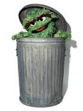

Oscar the Grouch is a character on the television program Sesame Street. He has a green body, no visible nose, and lives in a trash can. His favorite thing is trash, as evidenced by the song "I Love Trash", with a running theme being his collection of seemingly useless items.
Oscar has many pets, including: